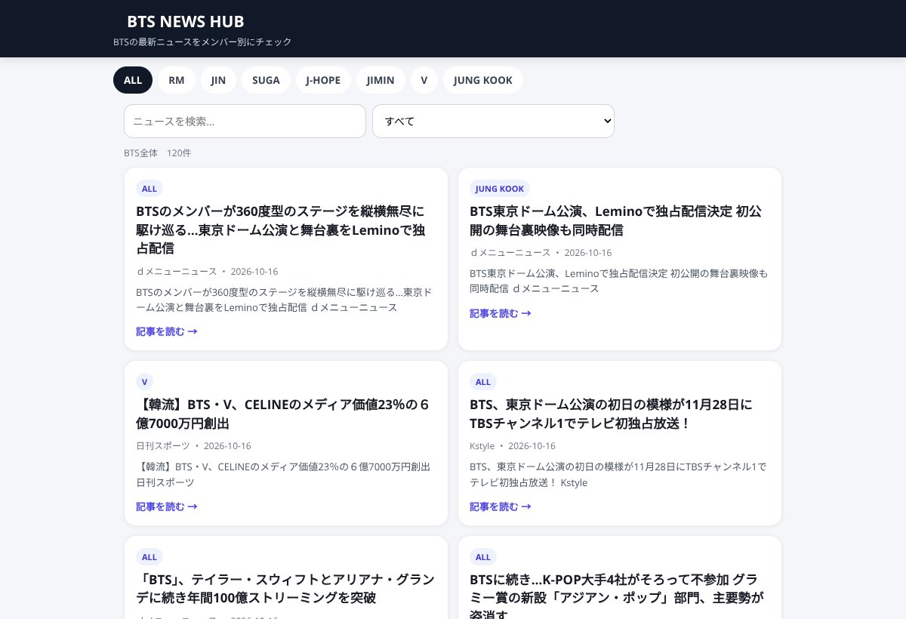
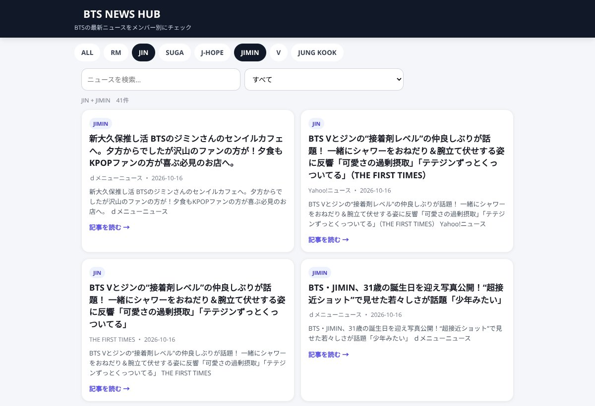

ChatGPTでキュレーションサイトを作る方法。BTS NEWS HUBを初心者が作ってみた
ChatGPTでWebサイトを作りたい初心者へ。BTS NEWS HUBを例に、テーマ決め、機能追加、スマホ表示の修正からGitHub Pagesでの公開まで、8ステップで紹介します。今回は、
ChatGPTを使ってキュレーションサイトを作る方法
を、実際に作った「BTS NEWS HUB」を例に紹介します。

キュレーションサイトというと難しそうですが、
簡単に言えば、
いろいろな情報を、特定のテーマでまとめて見やすくしたサイト
です。
僕の場合は、BTSのニュースをメンバーごとに見られるサイトを作りました。
きっかけは、妻のひと言
BTS NEWS HUBを作ったきっかけについては、以前の記事で書きました。
BTSが好きな妻から、
「メンバーごとのニュースをまとめて見られたら便利そう」
という話が出たことが始まりです。
そこから、
「それ、AIで作れるんじゃない？」
と思って実際に作ってみました。
そのときの試行錯誤についてはこちらの記事にまとめています。
▶ 前回の記事
「妻のひと言から、AIでBTSの情報サイトを作って公開するまで」
今回はその続きとして、
実際にChatGPTでこういうサイトを作るなら、何をすればいいのか
を順番にまとめます。
まずは全体の手順
僕がBTS NEWS HUBを作った流れを簡単にすると、
ChatGPTで作る
- サイトのテーマを決める
- ChatGPTに最初のサイトを作ってもらう
- 実際に触ってみる
- 欲しい機能を追加する
- 見た目やスマホ表示を修正する
- 情報を表示する仕組みを作る
インターネットに公開する
- GitHubにファイルを置く
- GitHub Pagesで公開する
です。
Webサイトを作った経験がほぼなかった僕でも、この流れで公開までできました。
僕は「0から1」が一番難しいと思う
ここで、実際にやってみて一番伝えたいことがあります。
Webサイトを作ろうとすると、
「どんなデザインにする？」
「どんな機能が必要？」
「ニュースはどう取得する？」
と、最初から全部考えたくなります。
でも、
そこまで考えなくていいと思います。
僕自身、
一番難しいのは、
何もない状態から最初の形を作ること
だと感じています。
なので最初は、
BTSのニュースをまとめて見られて、メンバーごとに絞り込めるWebサイトを作って。
くらいでもいい。
とにかくAIに最初の形を作ってもらう。
そして実物を見てから、
「ここを変えたい」
「これも欲しい」
と考える。
このほうが圧倒的に進めやすかったです。
考えてから作るというより、まず作って、見てから考える。
AIで何かを作るときは、この方法がかなり合っている気がします。
1. サイトのテーマを決める
まず、
「何の情報をまとめるサイトなのか」
を決めます。
僕の場合はBTSです。
BTS全体のニュースだけではなく、
JIN、SUGA、J-HOPE、RM、JIMIN、V、JUNG KOOK、
それぞれの情報を見られるようにしたい。
最初に考えたのは、それくらいでした。
キュレーションサイトなら、
BTS以外にも、
スポーツ、
地域イベント、
ゲーム、
旅行、
商品情報など、
「情報はたくさんあるけど、探すのが面倒」
なジャンルとは相性がよさそうです。
2. ChatGPTに最初のサイトを作ってもらう
テーマが決まったら、
さっそくChatGPTにお願いします。
僕自身はHTMLもJavaScriptもほとんど分かりません。
なのでコードを書くのではなく、
日本語で欲しいものを説明しました。
たとえば、
BTSのニュースをまとめて見られるWebサイトを作ってください。
メンバーを選ぶと、そのメンバーに関係するニュースを見られるようにしてください。
スマホでも見やすいデザインにしてください。
こんな感じです。
すると、
まず動くものを作ってくれます。
ここで初めて、
「もっとこうしたい」
が見えてきます。
3. とにかく触ってみる
最初にできたものは完成品ではありません。
実際に触ります。
ボタンを押す。
スマホで見る。
メンバーを選ぶ。
ニュースを見る。
すると、
「文字が小さい」
「ここは押しにくい」
「この動きは分かりにくい」
といった問題が出てきます。
コードが分からなくても、
使いにくいかどうかは分かります。
その違和感をChatGPTに伝えて直してもらいます。
4. 欲しい機能を追加する
使っているうちに、
妻からも要望が出てきました。
たとえば、
メンバーを1人だけではなく複数人選びたい。
そこで、
JINとJIMIN、
VとJUNG KOOK、
というように複数選択できるようにしました。

すると今度は、
選んでいるのに「ALL」のニュースも出てしまう。
また修正。
新しい機能を入れると、
新しい問題も出てきます。
ここは、
作る
↓
触る
↓
気づく
↓
ChatGPTに直してもらう
の繰り返しでした。
5. 見た目とスマホ表示を直す
機能が動いても、
使いやすいとは限りません。
文字の大きさ。
ボタンの位置。
余白。
スマホでの見え方。
こういう部分も少しずつ直しました。
便利だったのは、
スクリーンショットをそのままChatGPTに見せられること。
「この部分が見にくい」
と画像を見せて伝えると、
修正方法を考えてくれます。
専門用語が分からなくても進められるのは、初心者にはかなり助かりました。
6. ニュースを表示する仕組みを考える
キュレーションサイトなので、
情報をどう集めて表示するかも考える必要があります。
BTS NEWS HUBでは、
新しいニュースをできるだけ手作業なしで表示したいと考えました。
ここはサイトの見た目を作るより少し難しかったです。
どこから情報を取るのか。
いつ更新するのか。
同じ記事をどう扱うのか。
ここまで来ると僕には分からないことも多い。
なので、
分からないこと自体をChatGPTに聞きました。
全部を理解してから進むのではなく、必要になったところだけ教えてもらう。
これでも意外と進めます。
7. GitHubにファイルを置く
サイトができても、
そのままでは自分しか見られません。
そこで使ったのが、
GitHub
です。
初心者向けにかなりざっくり言えば、
ChatGPTが作ったWebサイトのファイルを置いておく場所
という理解で始めても十分でした。
ChatGPTが作ったファイルをGitHubに置きます。
僕も最初は、
「何をどこに入れればいいの？」
という状態でした。
ここもChatGPTに聞きながら進めました。
8. GitHub Pagesで公開する
最後は、
GitHub Pagesを使ってインターネット上に公開します。
これでURLができて、
スマホやパソコンから誰でもアクセスできるようになります。
実際に作ったものが、
BTS NEWS HUB
です。
https://gs5824878j-cyber.github.io/bts-news-hub/
自分のスマホでURLを開いて、
本当にサイトが表示されたときはかなり感動しました。
少し前までは、
Webサイトは
「誰かが作ったものを見るもの」
だったからです。
完璧な指示を考えるより、まず作ってみる
今回のBTS NEWS HUBは、
最初から今の形を想像して作ったわけではありません。
最初は、
「BTSのニュースをメンバーごとに見られたら便利そう」
それだけでした。
ChatGPTに作ってもらう。
触る。
不満が出る。
直す。
妻から要望が出る。
また直す。
そうやって少しずつサイトになっていきました。
AIを使うとき、
良いプロンプトを考えることはもちろん大切です。
でも、
最初から100点のプロンプトを書こうとして何も作らないより、
60点くらいの指示でも、一度形にしてしまう。
僕はそのほうがいいと思っています。
0から1をAIに手伝ってもらい、
1から10は実物を見ながら一緒に育てていく。
今回のBTS NEWS HUBは、
まさにそんな作り方でした。
もし、
「こんなサイトがあったら便利なのに」
と思っているものがあるなら、
まずChatGPTに、
「こんなの作れる？」
と聞いてみる。
Webサイト作りの最初の一歩は、
思っていたよりずっと小さなものでした。